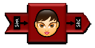
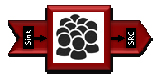
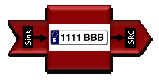

Augmented reality demonstration using the open source Kurento project
Sending real time communications from point A to point B? That functionality is relatively easy with WebRTC. Processing the media in real time to do something cool with it? That is an area I find a lot more interesting, but it is a lot tougher to do. When I was building my Motion Detecting Baby Monitor project, I wished I had some kind of media server to handle the motion detection processing. That would give me some flexibility to take the processor intensive algorithm off of my phone and stick that in the cloud if I wanted to save on battery. That also got me thinking – if you can do motion detection why not apply other more advanced image processing algorithms to the WebRTC stream? How about facial recognition, object detection, gesture tracking or many of the other cool features that are popping up all the time in the popular Open Source Computer Vision (OpenCV) project? I wrote this dream off as science fiction for another year or two.
Last December Luis López, a professor at Rey Juan Carlos University, gave an overview of an open source media server project that he originally worked on as part of the FI-WARE European Research project. This project was now called Kurento and includes support for WebRTC. It also includes integration with OpenCV and an interesting media pipelining architecture that allowed the use of multiple filters – media processing algorithms – on a real time stream. This looked like an important academic project, but I assumed it would take a while to materialize.
I was off on the time to materialize part – the Kurento.org community have made a tremendous amount of progress in just the few months since I first saw Luis’ presentation. More importantly, they are poised to play a much larger role in the future thanks to some significant funding by the European Commission to develop Kurento into a full Platform-as-a-Service in the cloud in a project called Nubomedia.
I asked Luis if he could walk us through a basic augmented reality application using Kurento. Check out his well-documented walk-through below and make sure to click through for links to his codes and example videos along they way.
{“intro-by”, “chad“}
Introduction
Currently, most WebRTC efforts and attention are concentrated on the client-side of the problem. However, WebRTC services also require a server-side infrastructure. This infrastructure must, at a minimum, provide a signaling mechanism making possible clients to find each other, but it may also provide capabilities in the media plane. Capabilities in the media plane are very useful when creating services beyond the standard WebRTC peer-to-peer call model. Some common examples of server-side media plane elements that could be used in WebRTC include:
- WebRTC media gateways – typical on services requiring protocol or format adaptations (as happens when integrating WebRTC with IMS)
- Multi Point Control Units (MCUs) – used to support group communications
- Recording media servers – helpful when one needs to persist a WebRTC call
Figure 1. Kurento vision for WebRTC media servers goes beyond transporting, storing and providing group communications. Kurento ambition is to make possible all kinds of processing of the streams including computer vision, speech analysis, augmented reality, blending, filtering and much more.
Following this, Kurento is an open source WebRTC server infrastructure having minimal ambition at the signaling plane but greedy ambition at the media plane. Hence, when looking at how Kurento deals with signaling, you won’t find many surprises: WebSockets, SIP, JSON, REST and other similar animals of the zoo are present. However, when looking to the media plane, Kurento approaches the problem from a novel and different perspective. Most media servers and media gateways around have been designed for performing specific and limited functions such as mixing, routing, transcoding or recording. They perform those functions efficiently, but it’s really hard to push them into other applications.
There are many interesting things we can do with the media beyond these standard processes. Why not enrich it using augmented reality? Why no analyze it using computer vision or deep speech analysis? Why can’t we blend, replicate or add special effects to the media as it is travelling? These kinds of capabilities might provide differentiation and added value to applications in many specific verticals including e-Health, e-Learning, security, entertainment, games, advertising or CRMs just to cite a few. For example, we have used Kurento for blurring faces on videoconferences where participants want to maintain anonymous video interviews with doctors or other medical professionals. We also use it for replacing backgrounds or adding costumes on a videoconference so that participants feel “inside” a virtual world in an advertisement. We can also detect and track user’s movements in front of their web-cam for creating interactive WebRTC (Kinect-like) games, or we can use it for reporting incidents (e.g. specific faces, violence, crowds) from security video streams.
Figure 2. Anatomy of an application using Kurento Media Server (KMS). KMS exposes its capabilities through a network interface that is consumed by a client library. That library exposes an API to application developers: the “Media API”.
Developing applications with Kurento: the Media API
At the heart of the Kurento architecture there is a piece of software called KMS (Kurento Media Server), based on pluggable media processing capabilities. Those capabilities are exposed to application developers as black boxes called Media Elements. Each Media Element holds a specific media capability, whose details are fully hidden to application developers. KMS media elements are not restricted to a specific kind of processing or to a given fixed format or media codec. There are media elements capable of, for example, recording streams, mixing streams, applying computer vision to streams, augmenting or blending streams, etc. Of course, developers can also create and plug their very own media elements to KMS. From the application developer perspective, media elements are like Lego pieces: one just needs to take the elements needed for an application and connect them following the desired topology. In KMS jargon, a graph of connected media elements is called a Media Pipeline.
KMS exposes the capabilities of creating media pipelines through a simple network interface based on JSON-RPC. However, for simplifying further the work of developers, we have created an abstract client API consuming that interface and directly exposing media elements and pipelines as objects that developers can instantiate and manipulate on client programs. We have called it the Media API. Currently we have Java and JavaScript implementations of the Media API, but additional language support (e.g Python, PHP, Ruby, etc.) is the roadmap.
Figure 3. Architecture of the WebRTC loopback example. The media pipeline is composed of a single media element (WebRtcEndpoint), which receives media and sends it back to the client. Follow this link to see the example executing.
To get familiar with the Media API let’s create an example. The simplest WebRTC application involving a media server that we can imagine consists on a WebRTC loopback (i.e. an application where the browser sends a WebRTC stream to the server and the server gives it back to the client). The source code in Table 1 implements that functionality using the Java version of Media API. You can implement it in JavaScript (both for browser and Node.js) following the same principles:
Table 1. Source code for the WebRTC loopback example.
Note that, for simplicity, we have omitted most of the signaling code. To build a working example you should add your own signaling mechanism. At Kurento, we have implemented a very simple API that provides basic signaling capabilities – what we call the Content API. Take a look at this presentation if you want to have a clearer image about the Content API. In Table 2 you can see the links to a fully functional WebRTC loopback example based on Content API signaling.
| WebRTC Loopback | Browser | Server | Video |
Table 2. Full source code and video showing the result of executing the WebRTC loopback example.
The WebRTC loopback is not very impressive, but with very little effort we can add more interesting features to it. For example, for recording the stream at the server, we just need to add a few lines of code. Table 3 shows how to do it (to simplify, we omit all parts of the code related to signaling and media pipeline creation):
Table 3. Source code of the WebRTC recorder example.
Figure 4. Architecture for the WebRTC recorder example. The media pipeline includes two media elements: the WebRtcEndpoint, which receives media and sends it back to the client, and a RecorderEndpoint, which stores media into the file system. Follow this link to see the example executing.
Creating a pipeline for playing the pre-recorded file is also straightforward, as can be seen in Table 4.
Table 4. Source code of the WebRTC player example.
Again, you can access the full application following the links provided in Table 5.
Table 5. Full source code and video showing the result of executing the WebRTC player&recorder example
Now, lets go beyond and introduce some advanced processing. Imagine we wish to augment the stream adding a hat on top of people faces using computer vision. We can modify our previous WebRTC loopback example providing that capability to the pipeline. The code in Table 6 shows how to do it:
Table 6. Source code for the WebRTC + FaceOverlayFilter example.
The computer vision algorithms of the FaceOverlayFitler require a raw video format while the WebRtcEndpoint generates a video stream encoded in VP9, but you don’t need to worry about that. You just connect the two elements and KMS takes care of performing the required transcoding.
To make the example more interesting, let’s add some interactivity. Look at the code in Table 7 and try to figure out what its doing:
Table 7. Source code for the WebRTC + PointerDetectorFilter + FaceOverlayFilter example.
The PointerDetectorFilter is a specific type of computer vision capability that detects the position of a pointer (an object having a specific shape or color that can be configured). The filter makes possible to define configurable square regions called Windows. If the pointer enters into a window, the filter generates a WindowInEvent. Of course, a program can subscribe to that event just adding listeners to the filter. Upon reception of the event, we can execute the actions we want, including changing the pipeline topology or modifying media elements behavior. In the example above, the event is firing the setting of the overlay image on the FaceOverlayFilter. As a result, the loopback application now gives back the user image and only when the pointer enters into the Window region (a virtual button depicted at a fixed position of user’s screen) a hat is depicted on top of her face. Table 8 shows hyperlinks to the code source code of a working example as well as a video-clip of it in execution.
Figure 5. Architecture of the WebRTC + PointerDetectorFilter + FaceOverlayFilter example. Follow this link to see the example executing.
Table 8. Full source code and video showing the result of executing the WebRTC + PointerDetectorFitler + FaceOverlayFilter
All the examples above have not much practical use. If you want to see more complex applications you can take a look to Kurento Github repository where we have made available the source code of services involving advanced features such as media processing chains, group communications, media interoperability, etc.
Figure 6. Example of media pipeline involving a complex chain of media processing capabilities for creating an interactive WebRTC game. You can see a clip of some users playing this game during Brazil Campus Party 2014 here.
Kurento media element toolbox
As we have seen in the previous examples, creating applications with the Media API is like a Lego game. You instantiate the media elements you want and connect them using the topology you prefer. Having said this, the application capabilities you can create depend on the available media element implementations. Kurento exposes a rich toolbox of media elements ready to be used, which can be classified in three different types:
- Endpoints: These are media elements capable of getting media streams into a pipeline (form the network, disk, etc.) or out of a pipeline (to the network, disk, etc.) Table 9 shows a list of the most common Kurento Endpoints.
- Filters: These media elements are in the path of the media through the pipeline. A filter always receives the stream from another media element, processes the stream somehow, and generates an output stream to be consumed by the next element of the pipeline. Table 10 shows some Kurento filters, which have been made openly available.
- Hubs: these are special media elements designed for group communications. Mixers and video routers are the supported types of hubs. Table 11 shows more details.
Table 9. List of some of the Endpoints made available by Kurento to application developers
| Filters | ||
| FaceOverlayFilter |  | Detects faces and draws an image overlaid on top of them. |
| PointerDetectorFilter | Detects movement of a pointer object having a specific color or shape. Generate events when the object enters into specific regions. | |
| CrowdDetectorFilter |  | Detects crowds of people on a video stream. Generates events when the crowding is over certain thresholds. |
| PlateDetectorFilter |  | Reads (European formatted) car plates using computer vision. Generate events providing the detected plate numbers. |
| ZBarFilter | Uses computer vision for detecting and reading bar and QR codes. Generates events providing code contents found on the stream. | |
Table 10. List of some of the Filters made available by Kurento to application developers
Table 11. List of some of the group communication capabilities made available by Kurento to application developers
Of course, developers can create their very own media elements and integrate them into Kurento. In general, the creation of additional Hubs and Endpoints is complex and requires deep knowledge of Kurento architecture and internals. However, the creation of filters is quite straightforward for anyone having minimal knowledge on video or audio processing. Kurento has some pre-build features specifically designed for OpenCV integration, which makes simple the creation of computer vision filters based on that popular open source software project.
Kurento research and development roadmap
Kurento is the result of the collaborative effort of industry and University research departments. For this reason, Kurento’s roadmap is highly influenced by the different research projects where committers participate. In particular, several European Research Projects belonging to Framework Programme 7th and Horizon 2020 are having a deep influence in Kurento’s evolution and financial support. In this context, Kurento has been integrated as part of FI-WARE (http://www.fi-ware.org): the European infrastructure for the Future Internet. FI-WARE offers a full featured cloud for developers where different enablers, including Kurento itself, can be instantiated and tested for free. FI-WARE is also celebrating hackathons all around the world and providing awards to developers for using their technology in the creation of applications. Visit http://lab.fi-ware.org and http://catalogue.fi-ware.org for having more information about FI-WARE and its ecosystem.
In addition, the NUBOMEDIA research project (http://www.nubomedia.eu) is also being built on top of Kurento. NUBOMEDIA is currently under execution and has the objective of creating an elastic cloud infrastructure offering a PaaS API for accessing Kurento capabilities. Thanks to NUBOMEDIA, the Kurento roadmap for the next few months is very ambitious and include progresses such as the following:
- Automatic deployment of Kurento on top of OpenStack
- Transparent elastic scalability of the infrastructure adapting to client load
- Software Defined Networking providing SLAs and guaranteed QoS to the infrastructure
- Multisensory multimedia through server-side DataChannels
- Distributed media pipelines going beyond the capabilities of a single computer
- Full telco infrastructure integration (i.e. IMS integration)
- IPTV integration
- Advanced client APIs for smartphones and WWW
- New media elements involving computer vision and augmented reality capabilities
Take a look to this presentation if you want to have an introduction to the NUBOMEDIA platform
Kurento open source software community
All Kurento technologies are distributed under the LGPL v2.1 license. Kurento aims at building a community of users and contributors enriching the project and making it to grow and to be useful for developers all around the world. Visit http://www.kurento.org and follow us in Twitter (@kurentoms) for having the latest information about the Kurento ecosystem or go to our GitHub repo if you want to fork or contribute to Kurento: https://www.github.com/kurento.
{“author”: “Luis López Fernández“}
Want to keep up on our latest posts? Please click here to subscribe to our mailing list if you have not already. We only email post updates. You can also follow us on twitter at @webrtcHacks for blog updates.

{kind=link}
{kind=link}
{kind=link}
{kind=link}
{kind=link}
{kind=link}
{kind=link}
{kind=link}
{kind=link}
{kind=link}
{kind=link}
{kind=link}
{kind=link}
{kind=link}
{kind=link}
{kind=link}
{kind=link}
{kind=link}
{kind=link}
Pingback: Enhancing the Power of WebRTC: Kurento & Nubomedia
Pingback: Un investigador de la URJC elegido entre las personalidades más innovadoras del mundo en tecnologías web | Universidad Rey Juan Carlos
Pingback: Audio of video via WebRTC opslaan op server | WebRTC Epistula
Pingback: Audio of video via WebRTC opslaan op server | WebRTC Epistula
Hi, great article about Kurento. I would like to use it for SIP applications though and haven’t found a way of doing that. (E.g. call SIP Phones)
Do you know of a Kurento plugin/adapter that can use/translate SIP for signaling instead of JSON-RPC Kurento protocol? Any sample code?
Hi, thank you very much for your interest.
Kurento Media Server is fully agnostic to signaling and does not provide any kind of signaling capabilities. Hence, no SIP plugin/adapters are available.
The Kurento team has created indeed some JSON-RPC libraries that can be used for creating applications basing on Java and on JavaScript. However, Kurento Media Server does not depend in any way on them. This means that you can integrate Kurento Media Server with a SIP stack as soon as you have such SIP stack. If you look around, you will see that, for example, in Java, there are many people integrating Kurento with the Mobicens SIP Servlet framework or even directly with the Jain SIP stack.
Best regards.